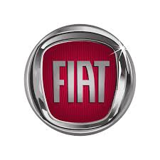

Основана в 1899 году группой инвесторов, среди которых был Джованни Аньелли.
В 1902 году Аньелли стал управляющим предприятием, которое стало одним из крупнейших в мире автопроизводителей. Синьор Аньелли был отставным офицером, и в своей компании он установил армейскую дисциплину и жёсткий порядок.
Вскоре после посещения главой FIAT предприятий Генри Форда в Турине был установлен первый в Европе автосборочный конвейер. В годы Первой мировой и первые послевоенные годы концерн занимался выпуском самолётов и танков. В 1919—1920-х годах заводы Fiat пережили ряд серьёзных забастовок, организованных коммунистами Антонио Грамши и Пальмиро Тольятти.
Фактически к управлению концерном Джованни Аньелли вернулся только после прихода к власти Бенито Муссолини.
